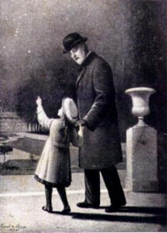
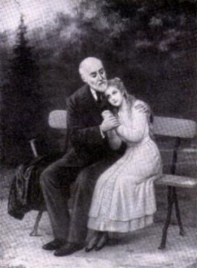

Santa Teresinha do Menino Jesus
e da Sagrada Face
Santa Teresinha do Menino Jesus
e da Sagrada Face
possuía uma alma sensível e delicada, que lhe proporcionou
viver com simplicidade e cultivar com afeto e delicadeza, um profundo e dedicado
Amor a DEUS. Tinha o hábito de se mortificar em honra ao CRIADOR. E assim, as
atividades de cada dia, mesmo a menor e mais modesta, sempre as realizava com
interesse e capricho, com o objetivo de demonstrar nas menores ações, o seu
apaixonado e desmedido amor ao SENHOR. Desabrochou de maneira encantadora
e encheu de vida a história da Igreja, que possui um belíssimo e perfumado
jardim com as flores mais lindas e mais admiráveis, de aromas os mais
diferentes, agradáveis e inesquecíveis, como o dela. São aromas que
sintetizam a maravilhosa santidade de homens e mulheres, que souberam
acolher e deixaram trabalhar em seu coração, as preciosas graças que
o CRIADOR derrama igualmente sobre todos os seus filhos.
O objetivo deste Site
é realçar a Alma de Santa Teresinha, mostrar o seu interior e revelar passagens de
sua vida, assim como acontecimentos que mostram a admirável dimensão de seu
coração, para que possa servir de modelo e inspiração as pessoas, na trajetória
existencial. Os textos foram extraídos de fatos descritos por ela mesma, que se
encontram nas páginas de seu livro: “História de uma Alma” e nas Cartas que enviou as suas irmãs.

CULTIVAR A HUMILDADE
“JESUS me fez compreender que a
única e
verdadeira glória é aquela que há de permanecer para sempre. Para
alcançá-la não é necessário praticarmos ações retumbantes e grandiosas, mas nos
esconder às vistas de todos e de nossos próprios olhos, de modo que não saiba
a mão esquerda o que faz a direita. Considerando que pela Vontade do CRIADOR
nascemos para a glória, indaguei interiormente o meio de consegui-la objetivamente.
Então, recebi uma inspiração reveladora: a minha nunca apareceria aos olhos
das criaturas de meu tempo, porque consistiria em me fazer
Santa”. (pág 82)
“Talvez JESUS, antes de visitar
a minha alma pela primeira vez, quis que eu conhecesse o mundo, a fim de que
pudesse escolher com mais segurança o caminho que deveria trilhar com
fidelidade”. (pág 84)
“Em nossa vida, existem muitos
pensamentos que não podemos revelar nem para nós mesmos. Da mesma forma,
como há objetos que expostos ao ar perdem logo o perfume, assim também há
pensamentos íntimos que se forem revelados em nossa linguagem terrena,
perderiam imediatamente o sentido profundo e celestial, que encerram.”
(pág 87)

 Na sua íntima união com DEUS,
Santa Teresinha adquiriu domínio completo sobre os seus atos e sua vontade, graças
ao qual,
Na sua íntima união com DEUS,
Santa Teresinha adquiriu domínio completo sobre os seus atos e sua vontade, graças
ao qual, todas as suas virtudes começaram a desabrochar no puríssimo jardim
de sua alma. E não é difícil compreender que esta prodigiosa eflorescência de
belezas sobrenaturais foi conseguida com um perseverante esforço e muita luta.
Se hoje a “Santinha” opera mudanças notáveis nos corações, fazendo um
imenso bem em todos os cantos da Terra, é porque realmente adquiriu essa
prerrogativa pelo mesmo preço com que JESUS resgatou nossas almas:
“pelo
preço do sofrimento e da Cruz”.
Não foi fácil enfrentar a sua própria vontade, negando qualquer satisfação à
sua própria natureza altiva e ardente. Desde criança se habituara a não se
desculpar nunca, e nem a se queixar nos acontecimentos cotidianos. No Carmelo,
quis sempre ser a humilde serva de suas irmãs, servindo a todas, sem distinção,
com o mesmo espírito de humildade e muito amor.
todas as suas virtudes começaram a desabrochar no puríssimo jardim
de sua alma. E não é difícil compreender que esta prodigiosa eflorescência de
belezas sobrenaturais foi conseguida com um perseverante esforço e muita luta.
Se hoje a “Santinha” opera mudanças notáveis nos corações, fazendo um
imenso bem em todos os cantos da Terra, é porque realmente adquiriu essa
prerrogativa pelo mesmo preço com que JESUS resgatou nossas almas:
“pelo
preço do sofrimento e da Cruz”.
Não foi fácil enfrentar a sua própria vontade, negando qualquer satisfação à
sua própria natureza altiva e ardente. Desde criança se habituara a não se
desculpar nunca, e nem a se queixar nos acontecimentos cotidianos. No Carmelo,
quis sempre ser a humilde serva de suas irmãs, servindo a todas, sem distinção,
com o mesmo espírito de humildade e muito amor.
Próxima Página
Retorna ao Índice